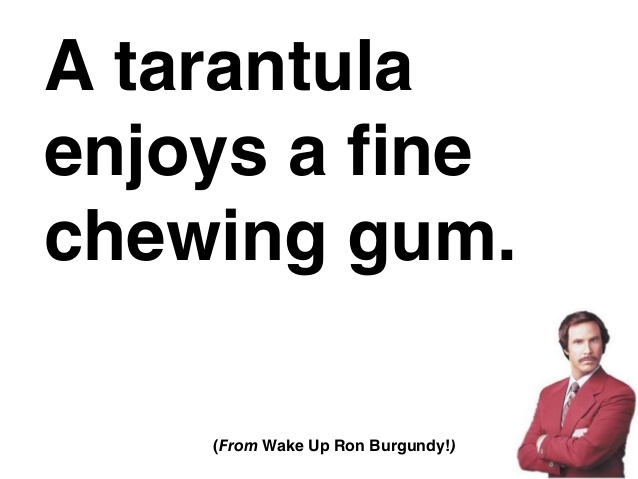
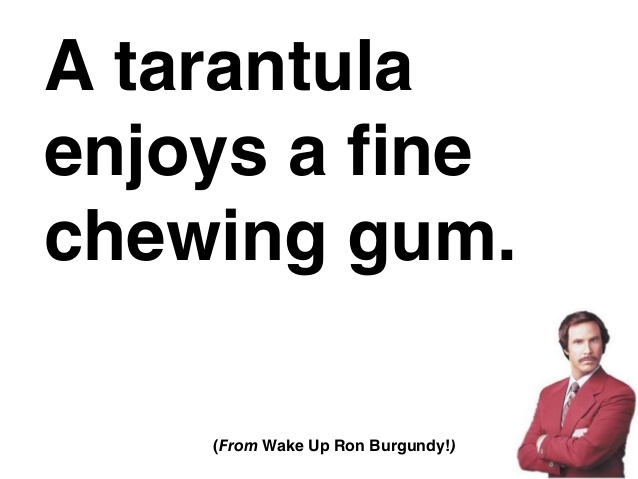

Overview
Exception handling is a critical component of any data science workflow. You write code. It breaks. You create exceptions. Repeat. From my experience, a point of confusion for new R users is how to handle exceptions, which I believe is more intuitive in Python (at least initially). This post provides a practical overview of how to handle exceptions in R by first illustrating the concept in Python.
Exception Handling in Python
I’ve listed some of my favorite Ron Burgundy vocal warm-up phrases below. As a side note, all are excellent for preparing your speaking voice before a big speech.

 

Let’s convert these into a list.
strings = ["how now brown cow",
"a tarantula enjoys a fine piece of chewing gum",
"the human torch was denied a bank loan",
"the arsonist has oddly shaped feet"]
Our goal is to extract the 5th element from each phrase. We’ll use a list comprehension, which maps or applies a function to each element in a list. The extract_element function below takes 3 arguments:
- strings - the string we want to split
- split_character - the character we want to split our strings on (in this case a space “ “)
- element_index - the index of the element we want to extract after splitting the string
def extract_element(strings, split_character, element_index):
return(strings.split(split_character)[element_index])
Here’s what we’ll get if we want only the first word:
print([extract_element(x, " ", 0) for x in strings])
## ['how', 'a', 'the', 'the']
Great! Let’s extract the fifth word.
print([extract_element(x, " ", 4) for x in strings])
## IndexError: list index out of range
Uh oh. This error message indicates that we tried an index value that was out of range, which makes sense: “how now brown cow” only has 4 words. In order to address this issue, let’s add two keywords to our function – try and except. Just like it sounds, the function will first try to execute the top code block. If an exception occurs, the function will pass control to the bottom code block. Let’s update the above function with our new, exception-handling logic and try again.
def extract_element_tc(strings, split_character, element_index):
try:
return(strings.split(split_character)[element_index])
except IndexError:
return("NO STRING HERE")
print([extract_element_tc(x, " ", 4) for x in strings])
## ['NO STRING HERE', 'fine', 'denied', 'shaped']
This time it worked without an issue. We simply said,“if there isn’t an element at this index, give me back a ‘NO STRING HERE’ label”. Now let’s achieve the same result in R.
Exception Handling in R
As I mentioned in the intro, dealing with exceptions in R can be a bit tricky at first. Let’s set up the previous task in R.
library(purrr)
strings = c("how now brown cow",
"a tarantula enjoys a fine piece of chewing gum",
"the human torch was denied a bank loan",
"the arsonist has oddly shaped feet")
extract_element = function(strings, split_character, element_index){
string_out = purrr::map_chr(strsplit(strings, split_character),
element_index
)
return(string_out)
}
We’ll approach this via the sapply function, which maps or applies a function to each element of a list or vector. We’ll also wrap the output of sapply with the unname function, which converts our list into a vector by removing the labels associated with each parsed string.
print(unname(sapply(strings, extract_element, " ", 1)))
## [1] "how" "a" "the" "the"
I think we know what happens next…
print(unname(sapply(strings, extract_element, " ", 5)))
## Error: Result 1 is not a length 1 atomic vector
Ok. So how do we replicate the try-except control flow in R? Via the tryCatch function. Let’s examine the complete function – extract_element_tc – in order to deal with the problem stated above.
extract_element_tc = function(strings_vector, split_character, element_index){
string_out = tryCatch({
return(purrr::map_chr(strsplit(strings_vector, split_character),
element_index
)
)
},
error = function(cond){
return("NO STRING HERE")
})
}
print(unname(sapply(strings, extract_element_tc, " ", 5)))
## [1] "NO STRING HERE" "fine" "denied" "shaped"
Boom. No errors this time. R is different in that tryCatch will have separate functions, referred to as handlers, that get called depending on the condition that occurs. In this case, we have 2 conditions– our desired condition, and the error condition. There are additional conditions that can be handled (see here for more detail). For example, you can also include a handler for warnings as well, which can be extremely helpful for finding exceptions that don’t break your code but instead give you undesired results.